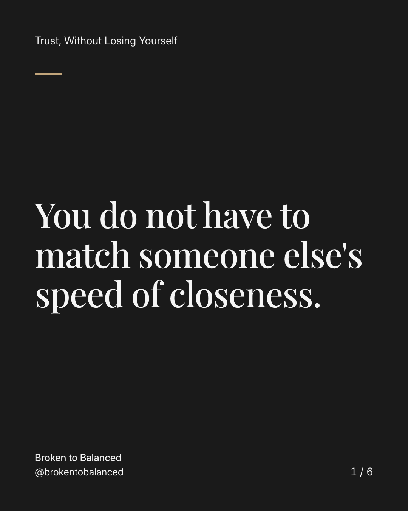
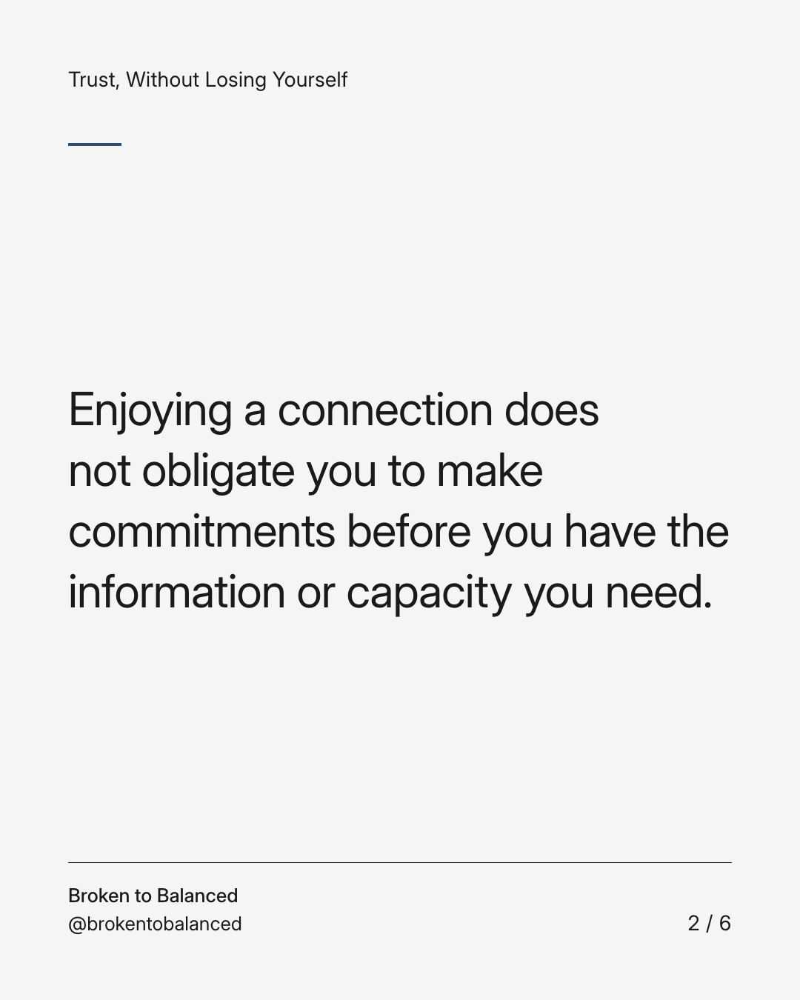
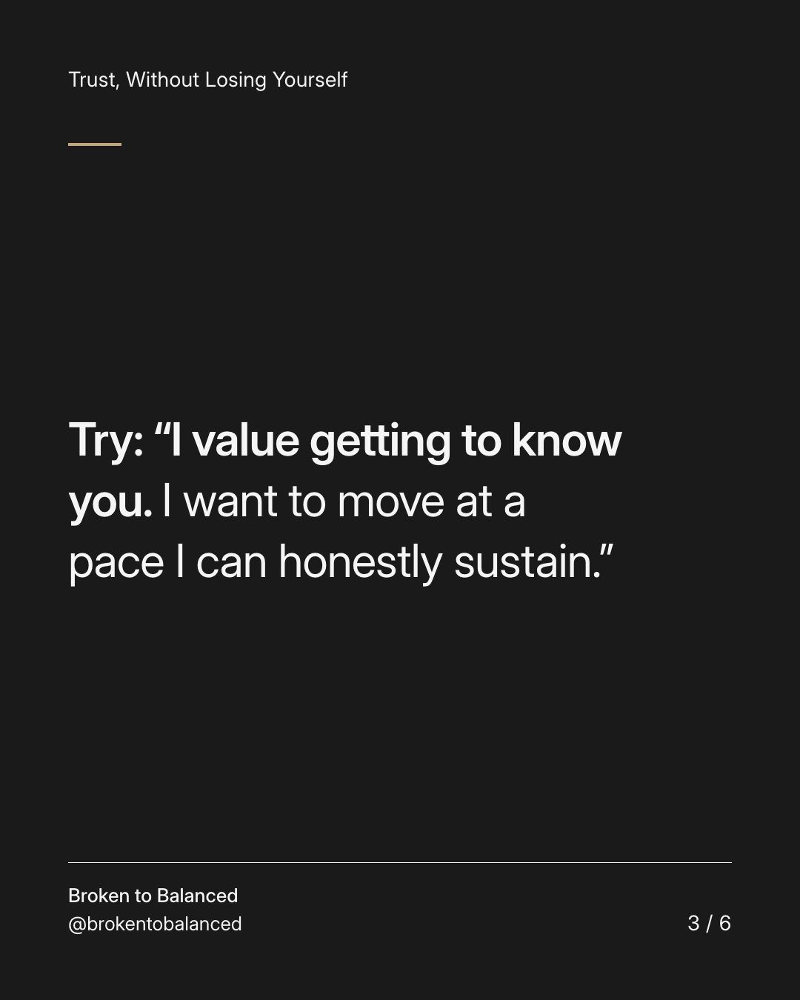
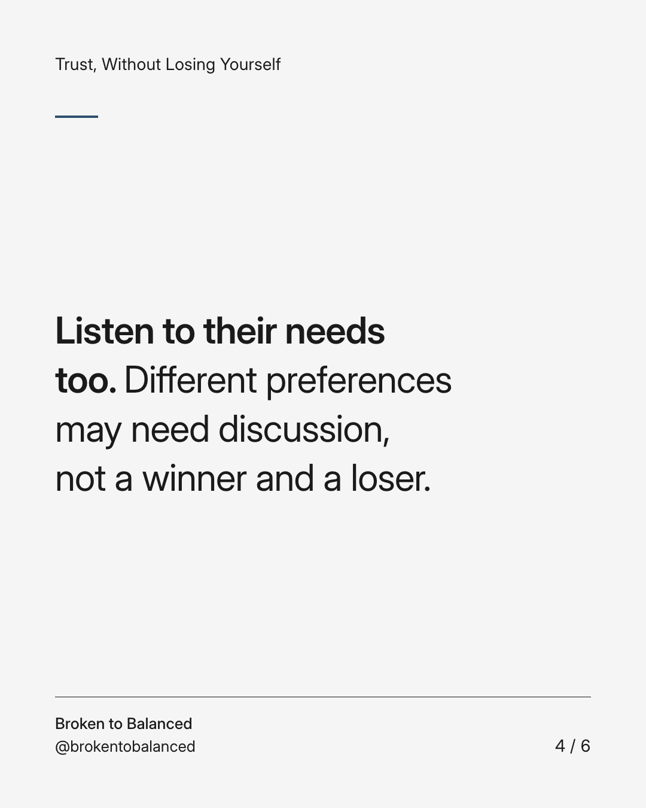
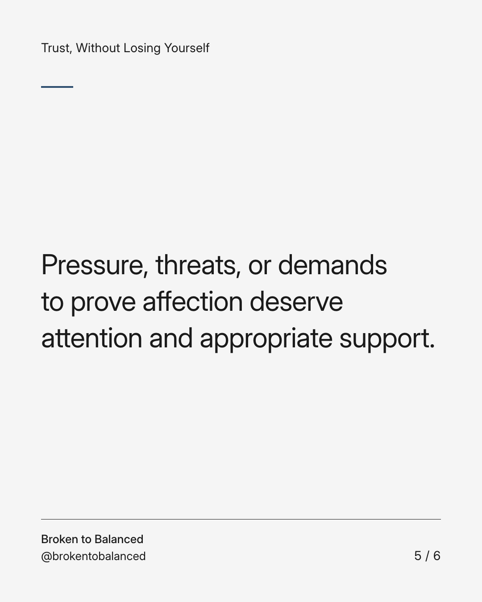
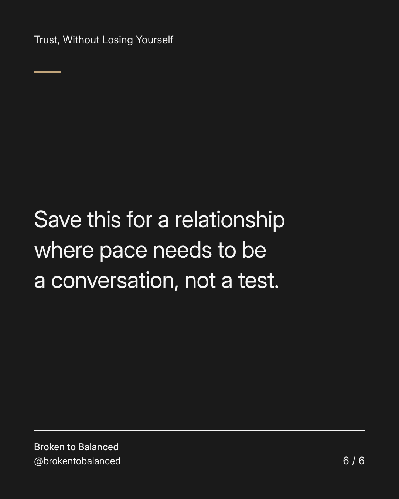

Exact text and accessibility text
You do not have to match someone else's speed of closeness.
Slide 1 of 6. You do not have to match someone else's speed of closeness.


Exact text and accessibility text
Enjoying a connection does not obligate you to make commitments before you have the information or capacity you need.
Slide 2 of 6. Enjoying a connection does not obligate you to make commitments before you have the information or capacity you need.


Exact text and accessibility text
Try: “I value getting to know you. I want to move at a pace I can honestly sustain.”
Slide 3 of 6. Try: “I value getting to know you. I want to move at a pace I can honestly sustain.”


Exact text and accessibility text
Listen to their needs too. Different preferences may need discussion, not a winner and a loser.
Slide 4 of 6. Listen to their needs too. Different preferences may need discussion, not a winner and a loser.


Exact text and accessibility text
Pressure, threats, or demands to prove affection deserve attention and appropriate support.
Slide 5 of 6. Pressure, threats, or demands to prove affection deserve attention and appropriate support.


Exact text and accessibility text
Save this for a relationship where pace needs to be a conversation, not a test.
Slide 6 of 6. Save this for a relationship where pace needs to be a conversation, not a test.
Exact caption
Plain-text fallback: select and copy the caption.